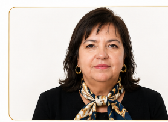
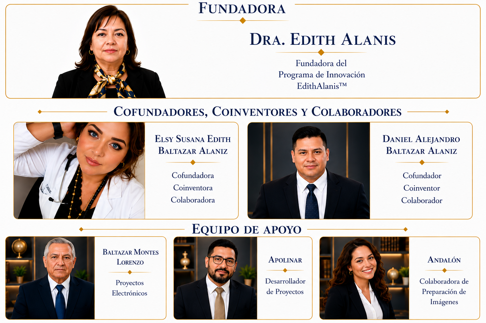
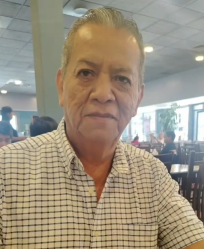

Elsy Susana Edith Baltazar Alaniz
Cofundadora · Coinventora · Colaboradora
Sitio oficial · Programa de Innovación
Inventora, investigadora y desarrolladora tecnológica. El Programa de Innovación EdithAlanis™ integra más de 113 invenciones orientadas a medicina regenerativa, sistemas bioelectrocarbonosos, energía, infraestructura universal, educación, cultura y bienestar social.
“La innovación trasciende cuando se comparte, se protege y se desarrolla en beneficio de la sociedad.”Conocer equipo oficialVer patentes

Dra. Edith AlanisFundadora · Inventora · InvestigadoraDirección institucional
Fundadora del Programa de Innovación EdithAlanis™
Responsable de la concepción y dirección del programa tecnológico, con un portafolio de invenciones orientado a soluciones biomédicas, energéticas, educativas, culturales e infraestructurales.
Estructura oficial
Organización institucional del programa: fundadora, cofundadores, coinventores, colaboradores y equipo de apoyo.

Cofundadora · Coinventora · Colaboradora
Cofundador · Coinventor · Colaborador

Proyectos Electrónicos
Desarrollador de Proyectos
Colaboradora de Preparación de Imágenes
Portafolio protegido
Caduca el 02/04/2032.
Caduca el 28/06/2032.
Caduca el 28/06/2032.
Caducó el 26/07/2025.
Caduca el 20/12/2036.
Caduca el 02/09/2045.
Otorgada; en espera del título durante junio de 2026.
Investigación e innovación
Tecnologías bioelectrocarbonosas para regeneración, soporte funcional y evaluación biomédica.
Arquitecturas funcionales para integración biomédica, energética y fisiológica.
Modelos autónomos para educación, cultura, salud, logística, vivienda y sistemas civilizatorios.
Transporte, recuperación, regulación y reutilización energética con arquitectura conductiva integrada.
Red nacional
Sección preparada para incorporar la Red Nacional de Coinventores por estado, con buscador, fotografías y fichas institucionales.
Vinculación
Para colaboración académica, vinculación institucional o información sobre el Programa de Innovación EdithAlanis™.
contacto@edithalanis.com